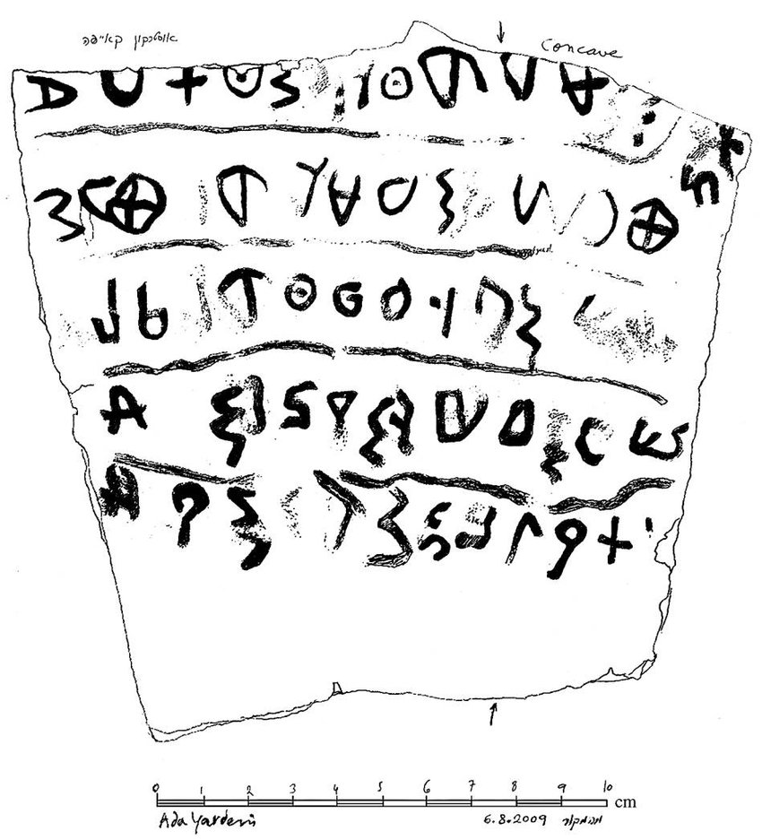

"the only mention of the name Ish-Baal (man of Baal) outside ofthe Bible"
“圣经之外唯一提到以实巴勒”
There has been an assumption on the part of skeptics that much of the Bible is fictitious due to a supposed lack of literacy before the Old and New Testaments were written down, much later than the events they recorded. They assume lack of literacy and use of oral testimony over time would make the historical records inaccurate. The New Testament, particularly the gospels, were in doubt due to this supposed lack of literacy and use of oral testimony. Stuff was just made up! I discuss these allegations in my section "New Testament Textual Criticism".
For literacy before the writing down of the Old Testament, we have archaeology to help us. According to William Dever, no fundamentalist sympathizer is he, in Has Archaeology Buried the Bible, he lays out the evidence from the discovery at the Tell Qeiyafa archaeological site for early literacy, at least as early as the time of David (most scholars understand that the books of Kings, Samuel and Chronicles were written down many centuries after the events recorded).
Three inscriptions in an early Canaanite script (Hebrew being a variant) were found at Tell Qeiyafa. One script mentions the name Ish-Baal (Man of Baal), first such name outside the Bible. It is used as a name for one of King Saul’s sons (1 Chronicles 8:33). Most scholars identify this person as Ish-Bosheth (Man of Shame). This find at Tell Qeiyafa suggests a reference to the biblical Ish-Bosheth at the mid-10th Century time of King David, proving literacy centuries earlier than the Old Testament was thought to have been written down. It is fitting that the writers of the chroniclers of the Bible events, due to their fealty to the line of David, would change Man of Baal to Man of Shame (2 Samuel 2:10) due to the fact that Ish-Bosheth apparently challenged David’s legitimacy to the throne! Even agreeing that the Old Testament as we know it today was written many years, even centuries, after recorded events, why must we doubt that these writers did not have written sources. The writers themselves claim this (2 Kings 13:12; 14:15; 22:7).1

怀疑论者有一种假设，认为圣经的大部分内容都是虚构的，因为误认为在旧约和新约被写下来之前，缺乏文字记录，所以错误认定圣经一定比所记录的事件要晚得多。 他们认为，随着时间的推移，缺乏文字记录和使用口头证词会使历史记录不准确。新约，特别是福音书，由于这种所谓的缺乏文字记录和使用口头见证而受到质疑。 这些都只是编造的！ 我在我的“新约文本批评”部分讨论了这些指控。
对于旧约之前的文字记录，我们有考古学来帮助我们。 根据威廉·德弗（William Dever）的说法，他不是一个原教旨主义的同情者，在《考古学埋葬了圣经吗》一书中，他列出了在Tell Qeiyafa考古遗址发现的早期文字记载的证据，至少早在大卫时代（大多数学者都人为，列王记，撒母耳记和历代志是在所记录事件发生的许多世纪后写下来的）。
在Tell Qeiyafa发现了三个早期迦南文字（希伯来语是它的一种变体）铭文。 一个文本提到了伊施巴力（Ish-Baal，巴力之人）这个名字，这是在圣经之外发现的第一个同样的名字。 它被用作扫罗王的一个儿子的名字（历代志上8：33）。 大多数学者认为这个人是伊施·波设Ish-Bosheth（羞耻之人）。Tell Qeiyafa的这一发现表明，它提到了公元前10世纪中叶大卫王时期的圣经中的伊施·波设Ish-Bosheth，证明了文字记载比旧约圣经被写下来的时间早了几个世纪。 圣经事件历代志的作者，由于他们对大卫的忠诚，将巴力的人改为耻辱的人（撒母耳记下2：10），因为伊施·波设显然挑战了大卫王的王位合法性！即使同意我们今天所知道的旧约，是在所记录的事件发生之后的许多年甚至几个世纪之后写成的，但我们为什么要怀疑这些作者没有书面资料。圣经的作者们自己也做了这样的说明（列王纪下13：12;14：15; 22:7).1